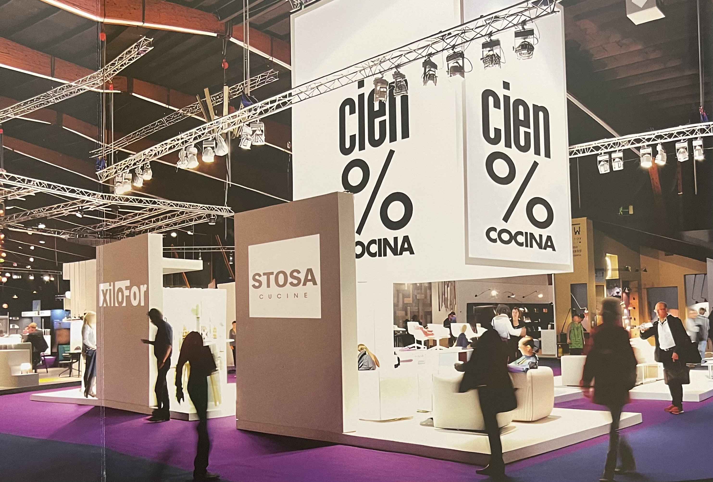

Vive la cocina en Zoco
La cocina vuelve a tener un rol preponderante, ahora eso sí para cualquier tipología de familia, dejando su uso meramente funcional para transformarse en un punto de encuentro, un sector social y vivible. Así el espacio cocina es un factor de compra decisivo para las personas al momento de elegir sus viviendas. Además, la tecnología smart continúa expandiéndose a diferentes facetas de la vida cotidiana. Un refrigerador que permite revisar su contenido sin abrir la puerta o el horno que automáticamente alcanzará la temperatura adecuada para la preparación de los alimentos y luego limpiará los residuos en sus paredes son algunos de los muchos adelantos que podemos encontrar.